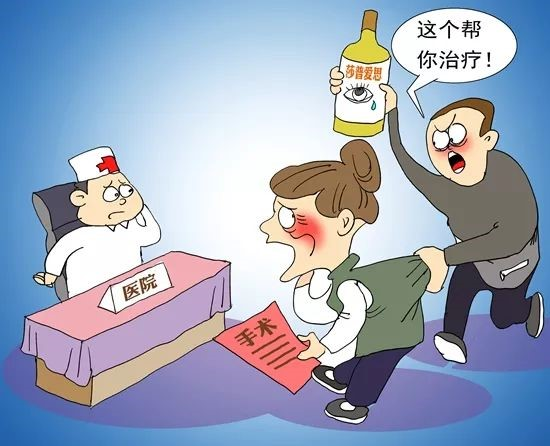
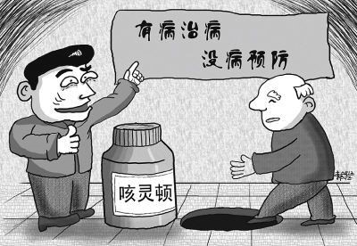

【导语】“神药”莎普爱思近日在质疑声中跌下神坛。记者发现，因购买类似“神药”而耽误治疗的案例数不胜数。相信“权威”、害怕手术、“宁信其有”的心理将老年人步步推向“神药”骗局。
电视都播了，肯定没问题
5月的一天，崔红平在诊室里为一名病人看诊，他患有继发性青光眼，视力如同盲人。
“为什么不早点来医院做手术？”上海第十人民医院的眼科医生崔红平不解地询问病人。病人告诉他，因为之前都在使用莎普爱思眼药水。“这款眼药水特别火，中央电视台都在播，我们相信央视”。
类似的回答今天崔红平听到了三次。“我当时特别火大。”崔红平说，“如果他们早点开刀，就不会到最后什么都看不见，跟盲人一样。”
“我一周接待大概120名患者，其中约80人是白内障患者，他们中有40%-50%用过莎普爱思。”崔红平表示，这么多病人使用莎普爱思，一用就是一两年、两三年，希望用这个药治好病，不用开刀。拖到后面，眼睛看不见东西，必须到医院开刀。两三年里花了好几千块买药，没有任何用处。
81岁的甘肃老人张力全经过不到20分钟的手术，治好了白内障。在这之前，他也滴了好几个月的莎普爱思眼药水。
张力全已经记不起自己的眼睛是从哪天开始有毛病的了。起初，他觉得眼前好像蒙了一层薄雾，有时看不清报纸。他想起之前听别人说过一种病叫白内障，“我感觉我就是得了这个病。”
邻居给他推荐过一款眼贴，但他最后还是选择了买莎普爱思眼药水。因为“它上过电视，不到50元一盒，最关键的是有“铁榔头”郎平做担保： ‘白内障有得医，请滴莎普爱思。’”
回忆起每次使用莎普爱思时，张力全表示他的确感到眼睛“舒服一些”。“电视上那么多老人都治好了。”他本以为自己的眼睛也能靠滴眼药水治好，但滴了好几个月后，还是没什么效果。
广州市白云心理医院的心理咨询师张秋菊表示，那些以“权威人士”作招牌的医药广告正中老人群体的心理痛点。“因为老年人信息相对闭塞，与年轻人相比更容易迷信权威。”
年纪大，怕手术

家住农村的白内障老人徐大爷，至今仍在滴用莎普爱思。家人曾带他到县城医院看眼科，得知要动手术才能治愈，徐大爷拒绝了，“万一刀子动歪了，眼睛就彻底没了。”
徐大爷也明白，动手术花钱多，他不想给子女增加经济负担。“如果能够治滴眼药水就能治好病，那买滴眼药试一试也无妨。”相比动手术，滴眼药水无疑是“性价比”更高的选择。
“怕做手术，觉得年纪大了不能做手术。”上海新视界中兴眼科医院院长廉井财表示，对眼科治疗方法的不了解是老人们拖延治疗的一大原因。白内障手术是一种显微手术，而且在眼科早已是成熟技术，风险低而且痛感轻微。“我告诉很多患者，他们还很惊讶，怎么会上午手术，下午就能回家呢。”他说，即使是高龄或其他特殊情况需观察的患者也只需要住1-2天院。
“莎普爱思正是利用了患者尤其是老年人恐惧开刀的心理，声称不动手术也可以治好白内障。我每周都会碰到这种病人”，崔红平说，“另一方面，老年人没有工作的需要，恢复视力的需求没有年轻人迫切，因此更倾向于这种保守治疗。”
很多老人只有在病情恶化之时才愿意接受手术治疗，错失最佳治疗时机。
今年78岁的李大爷从40多岁起就一直患有泌尿系统方面的疾病。两年前，他曾被确诊为前列腺炎，医生建议开刀治疗。“他患有前列腺问题已有三十多年。两年前因膀胱结石曾在我们医院进行过手术。”泌尿外科医生副主任医师吴廷勇说，当时就已明确诊断李大爷同时还患有前列腺增生。吴延勇建议李大爷再做一次手术，但是老人及家中儿女都怕开刀，全家人讨论后决定放弃手术。
李大爷出院后，寄希望于保健品。当时在欧洲的家人经常寄一些进口的保健品回来，李大爷把保健品当特效药吃了两年多。其间李大爷的病症也并没有好转。一周前，李大爷膀胱出现问题，三四天没办法正常排尿，十分痛苦。到医院检查才发现，由于乱服用保健品，李大爷肝脏、肾脏功能均出现问题，李大爷这才意识到事态的严重性。
“患者前列腺肿大，是正常人的三四倍。”吴廷勇表示，B超检查结果显示患者双肾积水严重，且膀胱变薄。“我们先给患者上了导尿管，截至目前已有一个星期，复查后发现他肾功能已开始恢复，肝功能也在逐渐恢复。”
“病人太盲目相信保健品了。”吴廷勇表示他以前曾接触到一个前列腺癌患者，因为太信任保健品错过了最佳治疗时机，最终丢了性命。
“宁可信其有”

家住白云区金沙洲的忠叔、王姨夫妇，都已年逾七旬。最近3年来，夫妇俩花在保健品上的钱将近70万元。这是夫妻俩退休多年攒下来的积蓄，现在已经基本被掏空了。
2016年底到2017年1月初，忠叔、王姨夫妇先后两次参与“道山”淘金店组织的旅游。一个自称是某保健食品品牌营养师、营养研究院副院长的女子贺某来给老人们看病。患有糖尿病和便秘等病症的忠叔，被贺某说是“很严重，离中风和患癌很接近”。而只有失眠症状的王姨，则被告知问题稍微轻一些，但“也很危险，也要防癌防中风”。贺某建议忠叔服用“道山”公司宣传的蜂胶5个疗程，王姨则服用4个疗程。
王姨和忠叔都希望身体健康，老人家都怕有病，“就怕一生病就会生不如死”。听到自己身体出现这么“严重”的问题，自然想尽快康复。“钱攒多少也是放在那里。”王姨和忠叔商量着，“都是想着为身体好”，自己都有退休金，不用花儿女的钱，如果吃些产品对身体有好处，那花多少钱都值得。反正他们(保健品公司)讲得那么好，没有理由不相信。
于是二老便买了“道山”公司兜售的多种产品，但是吃了一个月，王姨依旧失眠，忠叔的便秘也不见好转。“感觉没什么效果，现在只想着退掉一部分产品，但‘道山’公司一直没有回音。”
无独有偶，今年87岁的广州老人黄勤也在保健品、保健器械上的花费累计已超过40万元。黄勤是一名退休教授，自1998年患糖尿病后就一直有买保健品的习惯。
以前黄勤买保健品是因为“害怕得病，尤其怕疼痛。”她患糖尿病20年，病友有的去世，有的中风坐轮椅，有的常住医院。她看过一些患癌的亲戚朋友，靠吗啡、杜冷丁等止疼药生存。
2010年，刚过八旬的黄勤失去了老伴。老伴是因胰腺癌去世的，当时突然昏迷了二十多天。那段期间，黄勤情绪很失落，花了很长时间才走出来。对患癌有产生了恐惧心理。
和她一样，黄勤身边有不少朋友也有这样的想法。住在她楼下的一位退休工程师，几次就此找她做心理咨询。黄勤的妹妹是位退休医生，买保健品比她还凶，“我们总想着有点用也是好的。”
这些年黄勤吃过的亏不少，也花了很多冤枉钱。她曾花6万元买过一个频谱屋，后来查过出厂价发现仅需2万元。一款线粒体素国内700元一盒，她托在美国的儿子购买只花了不到200元，“保健品行业暴利得很”。
一次次被骗，黄勤对营销逐渐有了“免疫力”，恢复理性。
她笑言，面对疾病和死亡，心态最重要，“生老病死谁也逃不掉，在这面前人人平等。我现在是活一天赚一天。”
责任编辑：刘灿娇 赵柳
[收起]